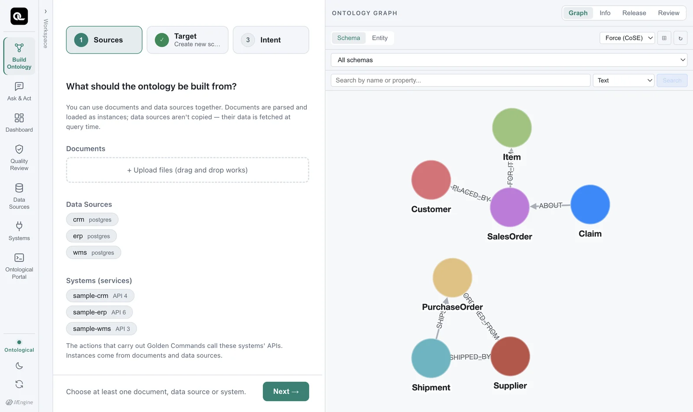

Learn the four core concepts — class, property, relationship and instance — and use the sample to compare an ontology with handling data in tables.
In one sentence#
An ontology is a model that defines the concepts your business needs and the relationships between them.
Like an ER diagram, it describes the things in your business and how they relate. On top of that, you can connect real data to it and use it as the basis for queries and for carrying out work.
Four core concepts#
| Concept | Description | Example |
|---|---|---|
| Class (node type, label) | A kind of thing that appears in your business | Supplier, PurchaseOrder, Shipment |
| Property | A value a class has | Supplier.name, Shipment.delay_days |
| Relationship | A connection between two classes, with a direction and a name | (PurchaseOrder)-[:ORDERED_FROM]->(Supplier) — a purchase order is placed with a supplier |
| Instance (node) | One piece of data that belongs to a class | Supplier S-CN-01 Shenzhen Goldline PCB, purchase order PO-002 |
Classes and relationships are the schema; instances and their connections are the data. In a graph database, instances are called nodes and connections are called edges (relationships).
The sample ontology at a glance#

| Class | Description | Source system |
|---|---|---|
Supplier |
Suppliers (5) | ERP |
Item |
Items (4) | ERP |
PurchaseOrder |
Purchase orders (8) | ERP |
Shipment |
Inbound shipments (8) | WMS |
Customer |
Customers (3) | CRM |
SalesOrder |
Sales orders (5) | CRM |
Claim |
Customer claims (3) | CRM |
| Relationship | How to read it |
|---|---|
(Shipment)-[:SHIPS]->(PurchaseOrder) |
A shipment carries a purchase order |
(PurchaseOrder)-[:ORDERED_FROM]->(Supplier) |
A purchase order was placed with a supplier |
(SalesOrder)-[:PLACED_BY]->(Customer) |
A sales order was placed by a customer |
(SalesOrder)-[:FOR_ITEM]->(Item) |
A sales order is for an item |
(Claim)-[:ABOUT]->(SalesOrder) |
A claim is about a sales order |
(Shipment)-[:SHIPPED_BY]->(Supplier) |
A shipment was sent by a supplier (only in the built ontology — see Chapter 4) |
How is it different from tables?#
Let's compare SQL and a graph on the same question: “Which inbound shipments are more than 3 days late, and which supplier and purchase order are they for?”
In SQL you join three tables. What's more, shipments live in WMS while purchase orders and suppliers live in ERP, so you would normally have to bring the two databases together first.
SELECT sh.shipment_no, po.po_id, s.name
FROM wms.shipment sh
JOIN erp.purchase_order po ON po.po_id = sh.ref_po_no
JOIN erp.supplier s ON s.supplier_id = po.supplier_id
WHERE sh.delay_days > 3;
In Cypher (a graph query language), you query connected data by relationship name.
MATCH (sh:Shipment)-[:SHIPS]->(po:PurchaseOrder)-[:ORDERED_FROM]->(s:Supplier)
WHERE sh.delay_days > 3
RETURN sh.shipment_no, po.po_id, s.name
The join condition (po.po_id = sh.ref_po_no) is gone. What remains are SHIPS and ORDERED_FROM, the relationship names your business uses. You need to know the join keys only once, when you define the relationship. After that, people and AI agents alike only need to know the relationship names.
An ontology pays off on the next question
If you create a SQL view for each question, you get one more thing to maintain for every question. If you model entities and relationships instead, you can answer even a brand-new question by following relationships that already exist. Questions like “What are that supplier's other open purchase orders?” or “Which customers who bought that order's items filed a claim?” can be answered without any new design work.
Why AI agents need an ontology#
Give an LLM agent the DDL for hundreds of tables, and every time it has to guess what a code name like TB507.C041 means and which columns to join on. An ontology settles those guesses once, in a form people have reviewed.
- Meaning —
Shipment.delay_dayscomes with a description: “number of days past the expected arrival date”. - Paths — the way from a shipment to its supplier is fixed by relationships.
- Behavior — what you can do to a shipment (“expedite”) and how to undo it are attached as actions (Part 6).
That's why, in Ontological Studio, the same ontology is the basis for queries, for execution and for apps.
Check yourself
- In the sample, which relationships, in which direction, do you follow to connect
ClaimandCustomer? - To find “customers who bought PCB boards”, which classes do you pass through?
- Which of these is a class, a property, a relationship and an instance? —
Item,PO-005,FOR_ITEM,safety_stock
Show answers
(Claim)-[:ABOUT]->(SalesOrder)-[:PLACED_BY]->(Customer)— follow ABOUT to the sales order, then PLACED_BY to the customer.Item←FOR_ITEM—SalesOrder—PLACED_BY→CustomerItemis a class,PO-005an instance (one purchase order),FOR_ITEMa relationship, andsafety_stocka property (the item's safety stock).